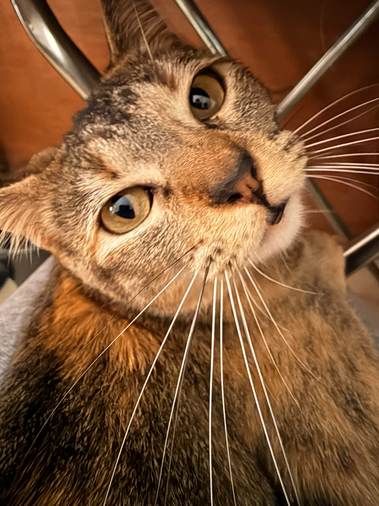
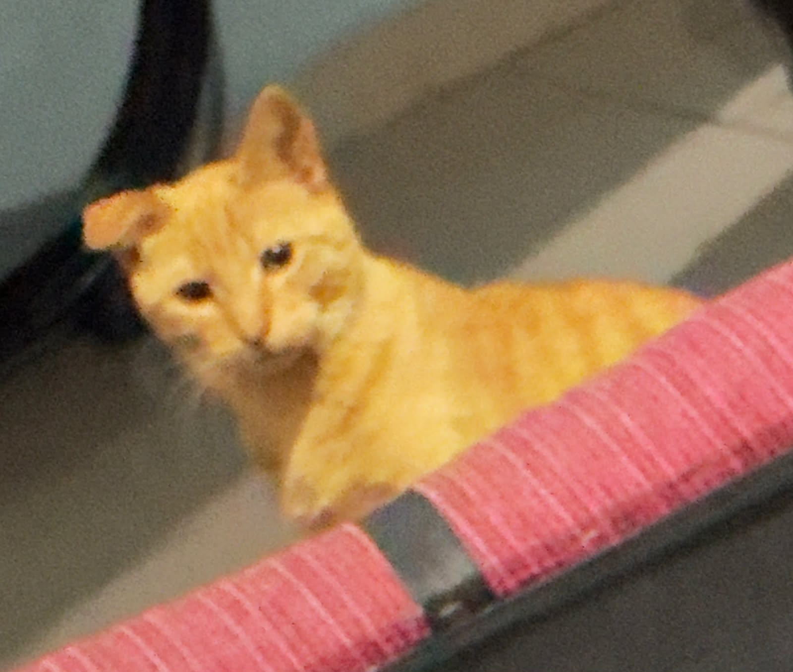
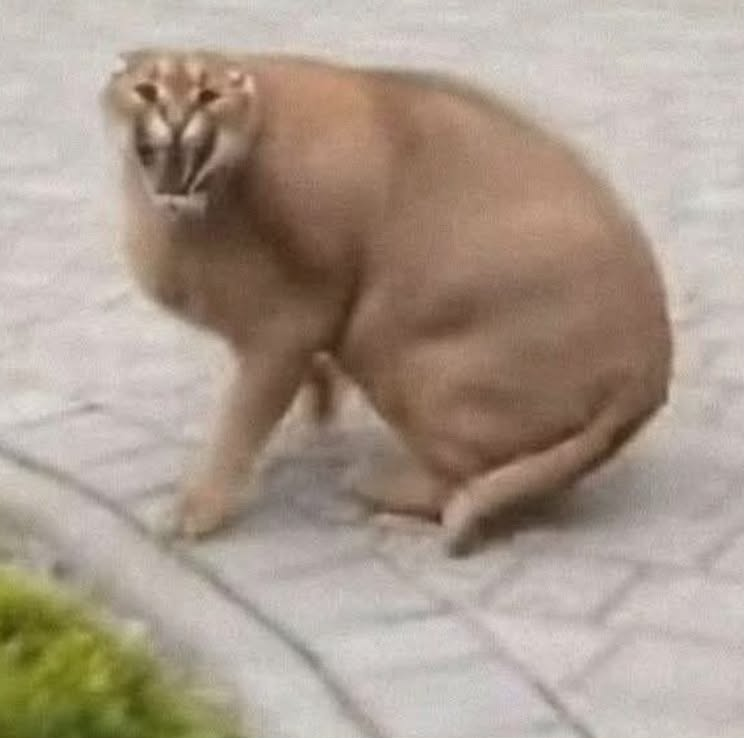
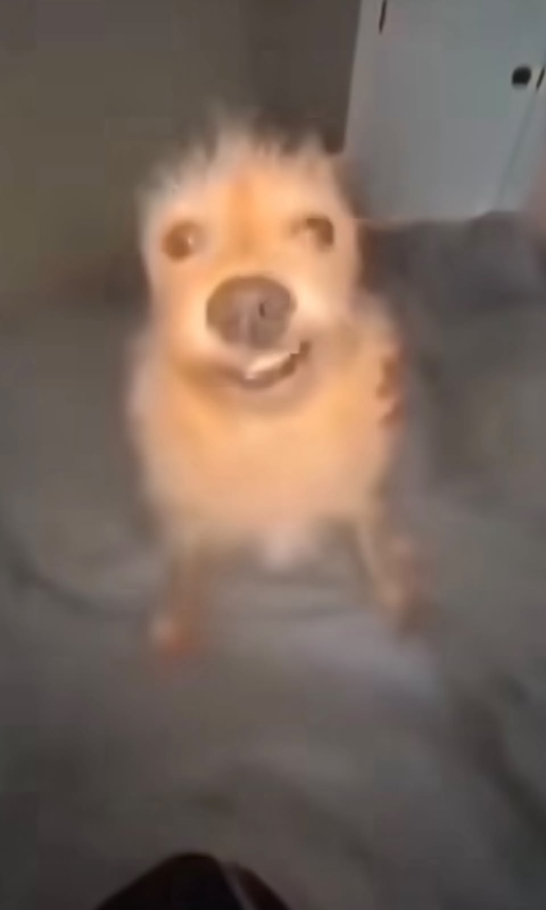

Griselda
Especie: Gato
Edad: 1 año
Tranquila, floja e inteligente.

Especie: Gato
Edad: 1 año
Tranquila, floja e inteligente.

Especie: Gato
Edad: 1 año
Juguetón y muy dócil, tragón.

Especie: Gato
Edad: 3 años
Enérgico, tiene su "caracter" y grande.

Especie: Perro
Edad: 2 años
Pequeño, amigable y un poco lento (tonto).